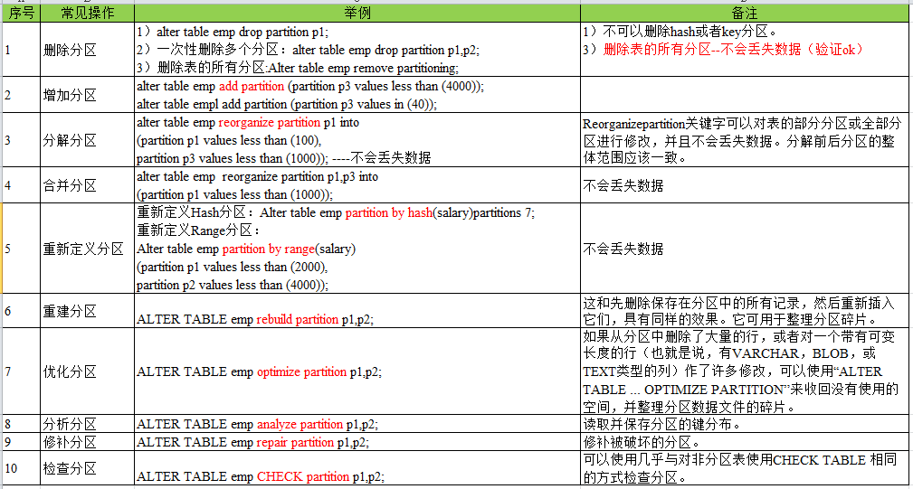

Mysql教程
1、数据库（DB DataBase）
概念：数据仓库、软件，安装在操作系统（windows、linux、mac）之上。
作用：存储数据，管理数据
关系型数据库：通过表与表之间，行和列之间的关系进行数据的存储（SQL）
- MySQL
- Sql server
- DB2
- SQLlite
- Oracle
非关系型数据库：对象存储通过对象自身的属性来决定（NoSQL） Not Only SQL
- Redis
- MongDB
2、数据库管理系统(DBMS)
概念：数据库的管理软件，科学有效的管理我们的数据，维护和获得数据
什么是MySQL
MySQL是最好的关系型数据库管理系统（RDBMS Relational DataBase Management System）应用之一
体积小，速度快，总体成本低
前世：瑞典MySQL AB公司
今生：Oracle旗下开源产品
下载MySQL
1.解压安装包
2.环境变量搭建 path 在其后面添加 你MySQL的bin目录
3.新建配置文件my.ini并配置
1 | [mysqld] |
4.启动管理员模式的命令提示符，切换路径到MySQL的bin路径下 输入mysqld-install(安装mysql)
5.输入mysqld —initialize-insecure —user=mysql 初始化数据文件
6.启动mysql 命令mysql -u root -p 进入mysql管理界面（密码可为空）
7.更改root密码
ALTER USER USER() IDENTIFIED BY ‘123456’; (输入flush privileges 刷新权限)密码为123456
8.修改my.ini文件删除最后一句话skip-grant-tables
9.重启mysql
net stop mysql
net start mysql
sc delete mysql 清空服务
连接数据
mysql -u root -p（密码） 连接数据库
mysql语句都是由 ；结尾
show databases 显示所有数据库
use 数据库名字 使用所选数据库
show tables 显示当前数据库的所有表
describe 表名 显示当前数据表的所有字段
create database 数据库名字 创建数据库
mysql 单行注释 — 多行注释/ /
退出mysql回到系统命令提示行：quit或者exit
DDL 定义
DML 操作
DQL 查询
DCL 控制
操作数据库
SQL语言包括四种主要程序设计语言类别的语句：
数据定义语言 (DDL)， 数据操作语言 (DML)， 数据控制语言 (DCL)和事务控制语言（TCL）。 查询语句的重写的实现主要是对SQL语言中的两大类语句进行重写，即数据定义语言DDL和数据操纵语言DML。
操作数据库>操作数据库中的表>操作数据表中的字段
创建数据库:
1 | create database [if not exists]yyb; --中括弧中的内容是可选的 |
使用数据库：
1 | use yyb; --如果数据库中表和表的字段是关键字需要加上 ` ` |
显示所有数据库：
1 | show databases; |
删除数据库：
1 | drop database [if exists] yyb; |
数据库的列类型
数值类型
tinyint 很小的数据类型 1个字节
smallint 较小的数据类型 2个字节
mediumint 处于中间的数据类型 3个字节
int 正常数据类型 4个字节
bigint 较大的数据类型 8个字节
float 单精度浮点数 4个字节
double 双精度浮点数 8个字节
decimal 字符串浮点数表示 金融计算的时候 常常使用decimal
字符类型
char 字符串固定大小 0~255
varchar 字符串可变大小 0~65535 一般使用
tinytext 微型文本 2^8-1
text 文本 2^16-1 存放大文本，长文章
时间类型
java.util.Date
date YYYY-MM-DD 日期格式
time HH-mm-ss 时间格式
datetime YYYY-MM-DD HH-mm-ss日期和时间 常用
timestamp 时间戳 从1970 1.1 到现在的毫秒数！ 也较为常用！
year 表示年份
空类型
没有值，不确定
注意不要使用NULL运算，但是可以用NULL运算但结果恒为NULL
数据库的字段属性
主键：唯一标识一条记录或者一条元组
非空：NULL NOT NULL 勾选后表示该列不能为空 默认是NULL 可以为空
Unsigned：无符号数，必须是整数类型，表示该列不能输入负数
自增：通常理解为，自动在上一条记录的基础上+1（默认），通常用来设计唯一的主键，必须是整数类型，可以自定义设计主键自增的起始值和步长
zerofill：使用0来填充 例如 设置int 长度为5 输入数字1 则会显示00001
默认: 设置默认的值，例如 性别 默认值为男 新建一条记录时候 性别一列会出现男
数据表的创建
目标：创建一个school数据库
创建学生表（列，字段）使用SQL创建
学号 int 登陆密码 varchar(20) 姓名，性别Varchar(2),出生日期（datetime），家庭住址，email
1 | create database school character set collate utf8_general_ci; |
主键
SQL 含义:
PRIMARY KEY 主键
NOT NULL 非空
auto_increment 自增
comment 注释
default 默认值
engine 引擎
INNODB
default charset =utf8 设置默认字符编码为utf8
格式
1 | CREATE TABELE [IF NOT EXISTS]`表名`( |
常用命令
show create database 数据库名 查看创建数据库的语句
show create table 数据表 查看创建数据表的语句
describe 数据表 查看表的结构
数据表的类型
现在默认是：INNODB
以前默认是：MYISAM
| MYISAM | INNODB | |
|---|---|---|
| 事务处理 | 不支持 | 支持 |
| 数据行锁定 | 不支持 （表锁定） | 支持 |
| 外键约束 | 不支持 | 支持 |
| 全文索引 | 支持 | 不支持 |
| 表空间的大小 | 较小 | 较大 约为MYISAM的2倍 |
常规使用：
MYISAM:节约空间,速度较快
INNODB:安全性高,支持事务的处理,多表多用户操作
所有数据库的文件都存在data目录下，一个文件夹就对应一个数据库，数据库存储本身而言还是文件的存储
MySQL引擎在物理文件上的区别：
- Innodb在数据库data下有 .frm：表结构的文件和 .ibd文件：表数据和索引的文件
- myisam在数据库data下有.MYD—“Data”数据信息文件，是表的数据文件。 .MYI—“Index”索引信息文件，是表数据文件中任何索引的数据树 *.sdi，Serialized Dictionary Information是指表结构元数据。
mysql默认的字符集编码是Latin1，不支持中文可以在my.ini中配置
1 | character-set-server=utf8 |
修改删除表
修改表的名字：
1 | alter table teacher rename as teacher1; |
增加表的字段:
1 | alter table teacher1 add age int(5); |
修改表的字段属性:
1 | alter table teacher1 modify age varchar(5); |
修改表的字段名
1 | alter table teacher1 change age age1 int(5); |
1 | alter table `teacher1` alter conlumn `字段名` set default =`默认值`; |
alter table 中modify 和change
modify只能修改字段的属性，不能修改字段名
change 修改字段的名字，也可以修改字段属性
删除表的字段
1 | alter table teacher drop age; |
删除表：
1 | drop table if exists teacher; |
所有的创建和删除操作尽量加上判断，以免报错 sql 关键字大小写不敏感，所有的sql都使用英文字符。
MySQL数据管理
constraint 约束
外键
DML(重点) w?kJ#xf5fmik
学生表的gradeid字段 要去引用年纪表的gradeid
定义外键key
给这个外键添加约束（执行引用）
foreign key 外键 references 引用
删除有外键关系的表的时候，必须要先删除引用别人的表(从表),再删除被引用的表(主表)
方法一

方法二
1 | alter table student add constraint `FK_gradeid` foreign key(`gradeid`) references `grade`(`gradeid`); |
以上的外键都是物理外键，数据库级别的外键，不建议使用（避免数据库过多造成困扰）
最佳实践：数据库就是单纯的表，只用来存数据 ，只有行（数据）和列（字段）
若想使用多张表的数据，想使用外键（程序去实现）
DML语句
插入语句
1 | insert into `student` values(001，'456'，'男','2020-1-5','水星','2816@qq.com'); |
注意事项：
- 字段和字段之间使用英文逗号隔开
- 字段是可以省略的，但是后面的值必须要一一对应，不能少
- 可以同时插入多条数据，VALUES后面的值，需要使用逗号隔开。
更新语句
1 | update `student` set `address`='水星' where `sex`='女'; |
注意事项:
- 条件不是必须的，如果未指定条件下，则会修改所有的表。
- 修改多个属性使用逗号隔开
条件：where 字句 运算符
操作符会返回boolean值（布尔值）
| 操作符 | 含义 | 范围 | 结果 |
|---|---|---|---|
| = | 是否相等 | 5=6 | false |
| <>或者！= | 是否不相等 | 5<>6或5！=6 | true |
| > | 是否大于 | 5>6 | false |
| < | 是否小于 | 5<6 | true |
| >= | 是否大于等于 | 5>=6 | false |
| <= | 是否小于等于 | 5<=6 | true |
| between and | 在某个范围内 | 5 between 9 | [5,9] |
| AND | 同时满足 | 5=6 AND 5<6 | false |
| OR | 满足其中一个 | 5=6 OR 5<6 | true |
trim：删除多余的逗号
删除语句
1 | delete from `student` where `sex`='女'; |
清空数据库
TRUNCATE：完全清空一个数据库表，表的结构和索引约束都不会变
1 | truncate `student`; |
delete 和truncate的区别
- 相同点：都可以删除数据且不会改变表的结构
- 不同点：
- truncate 删除表之后可以重置自增字段(auto_increment),而delete不会
- truncate不会影响事务
delete删除的问题，重启数据库后的现象
- INNODB:自增量会从1开始，数据是存于内存的断电即失
- MYISAM:自增量从上一个之后开始,数据是存于文件的，长期保持
DQL查询数据
DQL(Data Query Language)数据查询语言
- 所有的查询操作都使用它 关键词 select
- 简单的查询，复杂的查询它都能做
- 数据库中最核心的语言，最重要的语句
- 使用频率最高的语句
1 | --查询全部的学生 |
distinct:去掉重复项
1 | select distinct `address` from `student`; |
数据库表达式：文本值，列，NULL，函数，计算表达式，数据库变量
where 条件子句
where作用：检索数据中符合条件的值
搜索条件由一个或多个表达式组成！结果返回布尔值
| 运算符 | 语法 | 结果 | ||||
|---|---|---|---|---|---|---|
| AND && | a AND B a&&b | 两个同时为真结果为真 | ||||
| OR \ | \ | a OR B a\ | \ | b | 两个有一个为真结果为真 | |
| NOT ! | not a ! a | 取反，真为假 假为真 |
1 | --查找id在4-6之间的学号，性别，地址，成绩 |
模糊查询
模糊查询：比较运算符
| 操作符 | 语法 | 描述 |
|---|---|---|
| IS NULL | a IS NULL | 操作符为空，结果为真 |
| IS NOT NULL | a IS NOT NULL | 操作符不为空，结果为真 |
| BETWEEN AND | a between b and c | 若a在b与c之间,结果为真 |
| LIKE | a like b | SQL匹配，如果a匹配 b，则结果为真 |
| IN | a in(a1,a2,a3…) | 假设a在括号当中结果为真 |
MySQl通配符：%(0到任意个字符), _(一个字符)
1 | --查询姓李的学生 |
联表查询
思路：
- 需求分析，分析查询的字段来自那些表(连接查询)
- 确定使用那种连接查询？一共有7种
- 确定交叉点(这两个表中那个数据是相同的)
- 判断的条件 ：交叉点相同

join (连接的表) on (判断的条件) 连接查询
where 等值查询
1 | --查询学生的学号，姓名，课程号，课程名称,成绩, |
查询的大体思路:
我要查哪些数据
数据从哪些表来 from 表 xxxx join(什么连接) 连接的表 on 交叉条件
假设存在多张表查询，慢慢来，先查询两张表在慢慢增加
需要寻找到题中的主体是什么：
| 操作 | 描述 |
|---|---|
| left join | 会从左表中返回所有的值，既是右表中没有匹配 |
| inner join | 如果两表中至少有一个匹配，就返回行 |
| right join | 会从右表中返回所有的值，既是左表中没有匹配 |
自连接
核心：一张表拆为两张一样的表

父表：
| categoryid | categoryName |
|---|---|
| 2 | 信息技术 |
| 3 | 软件开发 |
| 5 | 美术设计 |
子表：
| pid | categoryid | categoryName |
|---|---|---|
| 2 | 8 | 办公信息 |
| 3 | 4 | 数据库 |
| 3 | 6 | web技术开发 |
| 5 | 7 | ps技术 |
实现效果：
| 父：categoryName | 子：categoryName |
|---|---|
| 信息技术 | 办公信息 |
| 软件开发 | 数据库 |
| 软件开发 | web技术开发 |
| 美术设计 | ps技术 |
1 | select f.`categoryName` as 父名字,s.`categoryName` as 子名字 |
分页和排序
order by 排序：升序 ASC，降序 DESC
1 | order by `需要排序的字段` ([ASC|DESC])--默认为升序（ASC） |
limit 分页：
pageSize:页面大小
limit 数据库里分页公式：(n-1)*pageSize 起始值
假设每一页显示5条数据
第一页 limit 0，5 (1-1)*5,5
第二页 limit 5，5 (2-1)*5,5
第三页 limit 10，5 (3-1)*5,5
第N页 limit (n-1)5,5 (N-1) 5,5
n：当前的页数
数据总数/页面大小=总页数
1 | --语法 |
子查询本质：在where语句中嵌套一个子查询语句
MySQL函数
运算函数：
ABS() 绝对值函数
ceiling() 向上取整
floor() 向下取整
rand() 随机数
sign()判断一个数的符合
字符串函数:
char_length( ) 字符串长度
concat( ) 合并字符串
insert( ) 插入 可以从某个位置替换某个长度
lower() 小写字母显示
upper() 大写字母显示
instr( ) 返回第一次出现的子串的索引
replace( ) 替换出现的指定字符串
substr( ) substring( ) 返回指定的子字符串(源字符串，截取的位置，截取的长度)
reverse( ) 反转字符串
时间和日期函数
current_data( ) ，CURDDATE( )获取当前日期
now( ) 获取当前的时间
localtime( )本地时间
sysdata( ) 系统时间
year( ) 年
month() 月
day( ) 日
hour( ) 时
minute( ) 分
second( ) 秒
system_user ( ) ,user() 当前使用数据库的用户
聚合函数
| 函数名称 | 描述 |
|---|---|
| COUNT() | 计数 |
| SUM() | 求和 |
| AVG() | 平均值 |
| MAX() | 最大值 |
| MIN() | 最小值 |
| … | … |
count(指定列)会忽略所有的NULL值
count(*)不会忽略NULL值
count(1)不会忽略NULL值
MD5:信息摘要算法，主要增强算法复杂度和不可逆性
通过MD5( )函数进行更改
select：
事务
核心：将一组SQL放在一个批次中去执行
事务原则 ：ACID原则
原子性 一致性 隔离性 持久性
原子性(Atomicity)：两个步骤要么一起成功，要么一起失败，不能只发生其中一个动作
一致性(consistency)：最终一致性（最后的值一定是唯一的），事务前后的数据完整性要保持一致
隔离性(lsolation)：事务的隔离性是多个用户并发访问数据库时，数据库为每一个用户开启的业务，不能被其他事务的操作数据所干扰事务之间要相互隔离
持久性(durability )： 表示事务结束后的数据不随着外界原因导致数据丢失，事务一旦提交不可逆,被持久化到数据库中
隔离所导致的一些问题：
脏读： 一个事务读取了另外一个事务未提交的数据
不可重复读：在一个事务内读取表的某一行数据，多次读取结果不同（不一定错误，只是某些场合不对）
虚（幻）读：指一个事务内读取到了别的事务插入的数据，导致前后数据不一致
mysql默认是开启事务自动提交的
1 | set autocommit=0 --关闭事务自动提交 |
事务的实现步骤:
1 | set autocommit=0 --关闭事务自动提交 |
索引
索引：索引(index)是帮助MySQL高效获取数据的数据结构
索引的分类：
- 主键索引(PRIMARY KEY)
- 唯一标识，主键不可能重复，只能有一个列作为主键
- 唯一索引(UNIQUE KEY)
- 避免重复的列出现，唯一索引可以重复，多个列都可以标识为唯一索引
- 常规索引(KEY/INDEX)
- 默认的，index和key 关键字来设置
- 全文索引(FullText)
- 在特点的数据库引擎下才有，myisam下才有、快速定位数据
显示所有的索引信息：
1 | show index from `表名` |
EXPLAIN:分析sql的执行情况
1 | EXPLAIN select * from `student` --非全文索引 |
全文索引:
1 | EXPLAIN select * from `student` where match(`全文索引的字段`) AGAINST（'匹配的内容'） |
测试索引
1 | --写函数之前必须写 |
索引命名：
id 表名 字段名
1 | create index `ip_ 表名 _字段名` on 表名(`字段名`) |
索引在小数据量的时候用处不大，大数据的时候，效果明显
索引原则：
- 索引不是越多越好
- 不要对经常变动的数据表加索引
- 数据量较小不需要加索引
- 索引一般加在常用来查询的字段上
索引的数据结构
Hash类型的索引
Btree是INNODB默认的索引数据结构
数据库备份、权限管理
权限管理
1 | -- 创建用户 |
identified 确定
privileges 权限
grant 给予
revoke 撤回
数据库备份
- 保证重要的数据不丢失
- 数据转移
MySQL数据库备份的方式
- 直接拷贝物理文件 （data文件夹）
- 在可视化工具中手动操作
- 使用命令行导出 mysqldump(转储)
1 | mysqldump -hlocalhost -uroot -p123456 school student>d:/a.sql |
导入：
1 | -- source 备份文件所在目录 |
数据库的设计
糟糕的数据库设计
- 数据冗余、浪费空间
- 数据库的插入和删除都会很麻烦、异常（屏蔽使用物理外键）
- 程序的性能差
良好的数据库设计
- 节省内存空间
- 保证数据库的完整性
- 方便我们开发系统
开发过程中：
- 分析需求：分析业务和需要处理的数据库的需求
- 概要设计：设计关系图E-R图
设计数据库的步骤(个人博客)：
- 收集信息、分析需求
- 用户表（负责登录注销、用户个人信息、写博客、创建分类（多人））
- 分类表（文章分类、创建的作者）
- 文章表（文章的信息）
- 评论表(用户的评论)
- 友链表（友链信息）
- 自定义表（系统信息，某个关键的字、或者一些主字段） key：value
- 标识实体(把需求落地到每个字段)
- 创建数据库
- 创建数据表
- …
- 标识实体之间的关系
- user—>blog 写博客
- user->category 创建分类
- user->user 关注
- links 有链
- user-user-blog 评论
三大范式
不按照规范建立表会导致：
- 信息重复
- 更新异常
- 插入异常
- 无法正常显示信息
- 删除异常
- 丢失有效的信息
三大范式
第一范式
原子性 保证每一列不可再分
第二范式
前提：必须满足第一范式
每张表只描述一件事情
第三范式
前提：必须满足第二范式和第一范式
需要确保数据表中的每一列数据都和主键直接相关，而不能间接相关
JDBC
不同的数据库直接有不同的数据库驱动
SUN公司为了简化开发人员的（对数据库的统一）操作，提供了一个（java操作数据库的）规范，俗称JDBC 这些规范的实现由具体的厂商去实现
应用程序—-》JDBC—》数据库驱动—》数据库
JDBC程序
1 | public class Test{ |
URL
1 | // jdbc:mysql://localhost:3306/数据库名?参数1&参数2&参数3... |
connecation（数据库连接）
1 | connection.commit();//设置提交 |
Statement 执行SQL的对象 PrepareStatement执行SQL的对象
1 | statement.execute(sql); //执行任何SQL语句 |
Resultset:SQL查询语句返回的结果集
1 | resultset.beforeFirst();//移动到最前面 |
释放资源是必须的
SQL注入
sql存在漏洞，会被攻击导致数据泄露，SQL拼接 or
1 | select * from `student` where `name`=名字 AND `password`=密码; |
数据库连接池
数据库连接—执行完毕—释放连接
十分浪费系统资源
池化技术：准备一些预先的资源，过来就连接预先准备好的
常用连接数为10个
最小连接数：10个
最大连接数：100个 业务最高承载上限
等待超时：100ms
编写连接池，实现一个接口 DataSource
开源数据源实现
DBCP
C3P0
Druid：阿里巴巴
使用了这些数据库连接池之后，我们在项目开发中就不需要编写连接数据库的代码了
DBCP
Jar包：commons-pool-1.6.jar commons-dbcp-1.4.jar
C3P0
jar包:c3p0-0.9.5.5.jar mchange-commons-java-0.2.19.jar
DBCP的properties配置文件
1 | driverClassName=com.mysql.jdbc.Driver #不多解释，这是基本的驱动加载 |
Partition (Mysql分区)
分区就是将表的数据按照特定规则存放在不同的区域，也就是将表的数据文件分割成多个小块，在查询数据的时候，只要知道数据数据存储在哪些区域，然后直接在对应的区域进行查询，不需要对表数据进行全部的查询，提高查询的性能。同时，如果表数据特别大，一个磁盘磁盘放不下时，我们也可以将数据分配到不同的磁盘去，解决存储瓶颈的问题，利用多个磁盘，也能够提高磁盘的IO效率，提高数据库的性能。常见的分区类型有：Range分区、List分区、Hash分区、Key分区：
- Range分区：按照连续的区间范围进行分区
- List分区：按照给定的集合中的值进行选择分区
- Hash分区：基于用户定义的表达式的返回值进行分区，该表达式使用将要插入到表中的这些行的列值进行计算。这个函数可以包含MySQL中有效的、产生非负整数值的任何表达式。
- Key分区：类似于按照HASH分区，区别在于Key分区只支持计算一列或多列，且key分区的哈希函数是由 MySQL 服务器提供。
优点：
可伸缩性：
将分区分在不同磁盘，可以解决单磁盘容量瓶颈问题，存储更多的数据，也能解决单磁盘的IO瓶颈问题。
提升数据库的性能：
减少数据库检索时需要遍历的数据量，在查询时只需要在数据对应的分区进行查询。
避免Innodb的单个索引的互斥访问限制
对于聚合函数，例如sum()和count()，可以在每个分区进行并行处理，最终只需要统计所有分区得到的结果方便对数据进行运维管理：
方便管理，对于失去保存意义的数据，通过删除对应的分区，达到快速删除的作用。比如删除某一时间的历史数据，直接执行truncate，或者直接drop整个分区，这比detele删除效率更高；
在某些场景下，单个分区表的备份很恢复会更有效率。
2、表分区的缺陷：
分区字段必须放主键或者唯一索引中；
每个表最大分区数为1024；
3、业务场景举例：
项目需要动态新建、删除分区。比如新闻表，按照时月份进行分区，同时为了防止新闻表过大，只保留最近6个月的分区，同时预建后面3个月的分区，这个删除、预建分区的过程就是分区表的动态管理。
历史数据或不常访问的数据占很大部分，最新或热点数据占的比例不是很大，这时也可以进行表分区。
4、MySQL分区类型：
根据所使用的不同分区规则，可以分成几大分区类型：
| 序号 | 分区类型 | 说明 | 使用频率 |
|---|---|---|---|
| 1 | RANGE 分区 | 按照连续的区间范围进行分区 | 较多 |
| 2 | LIST 分区 | 按照给定的集合中的值进行选择分区 | 一般 |
| 3 | HASH 分区 | 基于用户定义的表达式的返回值来进行选择的分区，该表达式使用将要插入到表中的这些行的列值进行计算。这个函数可以包含MySQL中有效的、产生非负整数值的任何表达式。 | 较多 |
| 4 | KEY 分区 | 类似于按照HASH分区，除了区别在于KEY分区只支持计算一列或多列，且KEY分区的哈希函数是由MySQL 服务器提供。 | 一般 |
（1）range分区： 每个分区的值位于一个给定的连续区间内之内。
1 | PARTITION BY RANGE (id) ( |
（2）List分区：类似于按RANGE分区，区别在于LIST分区是基于列值匹配一个离散值集合中的某个值来进行选择。
1 | PARTITION BY LIST (province_id) ( |
（3）Hash分区：基于用户定义的表达式的返回值来进行选择的分区，该表达式使用将要插入到表中的这些行的列值进行计算。这个函数可以包含MySQL中有效的、产生非负整数值的任何表达式。
HASH分区主要用来确保数据在预先确定数目的分区中平均分布。在RANGE和LIST分区中，必须明确指定一个给定的列值或列值集合应该保存在哪个分区中。
1 | create table foo_hash |
以上创建了4个分区。
（4）Key分区：类似于按HASH分区，区别在于KEY分区只支持计算一列或多列，且MySQL服务器提供其自身的哈希函数。必须有一列或多列包含整数值。
1 | create table foo_key |
（5）复合分区：子分区是针对 RANGE/LIST 类型的分区表中每个分区的再次分割。子分区可以是 HASH/KEY 等类型。
PARTITION BY RANGE (uid) SUBPARTITION BY HASH (uid % 4) SUBPARTITIONS 2(
PARTITION p0 VALUES LESS THAN (3000000)
DATA DIRECTORY = '/data0/data'
INDEX DIRECTORY = '/data1/idx',
PARTITION p1 VALUES LESS THAN (6000000)
DATA DIRECTORY = '/data2/data'
INDEX DIRECTORY = '/data3/idx'
);
以上例子，对 RANGE 分区再次进行子分区划分，子分区采用 HASH 类型。
- 常见分区操作：
- 
查看sql结构的语句
- ```sql
show create table 表名1
2
3
4
5
6
7
8
9
10
11
12
13
14
15
16
17
18
19
20
21
22
23
24
25
26
27
28
29
30
31
32
33
34
35
36
37
38
39
40
41
42
43
44
45
46
47
48
49
50
51
52
53
54
55
56
57
58
59
60
61
62
63
64
65
66
67
68
69
70
71
72
73
74
75
76
77
78
79
80
81
82
83
84
85
86
- ```sql
describe 表名 #也可以缩写为
desc 表名
# Mysql的函数
```mysql
#连接函数 将字符串进行相连 可以选择数据库中的字段
CONCAT(str1,str2,...)
select admin_info.admin_name,CONCAT('账号是',admin_info.admin_login) as username FROM im.admin_info
#将字符串或者选中的字段中的值转换为小写
LOWER(str)
SELECT admin_info.admin_pwd,LOWER(admin_info.admin_login) as `password` FROM im.admin_info
#将字符串或者选中的字段中的值转换为大写
UPPER(str)
SELECT admin_info.admin_pwd,UPPER(admin_info.admin_login) as `password` FROM im.admin_info
#左填充，用字符串pad对str的左边进行填充，达到n个字符 串长度
LPAD(str,n, pad)
SELECT admin_name,LPAD(admin_name,5,'*') FROM im.admin_info
#右填充，用字符串pad对str的左边进行填充，达到n个字符 串长度
RPAD(str,n, pad)
SELECT admin_name,RPAD(admin_name,5,'*') FROM im.admin_info
#去掉字符串头部和尾部的空格
TRIM(str)
SELECT Trim(admin_info.admin_name) FROM im.admin_info
#去掉头部字符串
SELECT LTRIM(admin_info.admin_name) FROM im.admin_info
#去掉尾部字符串
SELECT RTRIM(admin_info.admin_name) FROM im.admin_info
#截取 返回从字符串str从start位置起的len个长度的字符串 注意开始位置可以为负数 其中函数的起始位置是从1开始计数的,而不是从0开始计数的
#其中还有LEFT与RIGHT两个函数分别是指从左边与右边截取字符串
SUBSTRING(str,start,len)
SELECT SUBSTRING(admin_info.admin_tel,5,11) FROM im.admin_info
#向上取整
ceil()
select CEIL(-7.3548) # -7
#向下取整
floor()
select floor(-7.3548) # -8
#四舍五入取整
select round(-7.3548,3) # -7.355
#取模
mod()
select mod(7.3548,3) # 1.3548
#随机数 从0-1的随机小数
rand()
select rand()
#获取当前日期
CURDATE()
#获取当前时间
CURTIME()
#获取当前日期+时间
NOW()
#增加时间 可以增肌 年月日 interval
#日期参数 可以选择CURDATE() CURTIME() NOW() interval 增加多少 是增加天数 月数 年数
DATE_ADD()
#两个时间相差的天数 两个日期参数
DATEDIFF()
#如果value为true，则返回t，否则返回 f
IF(value , t , f)
#如果value不为空，返回value1，否则 返回value2
ifnull(value1,value2)
#如果val1为true，返回res1，... 否 则返回default默认值
CASE WHEN [ val1 ] THEN [res1] ... ELSE [ default ] END
#如果expr的值等于val1，返回 res1，... 否则返回default默认值
CASE [ expr ] WHEN [ val1 ] THEN [res1] ... ELSE [ default ] END
- ```sql